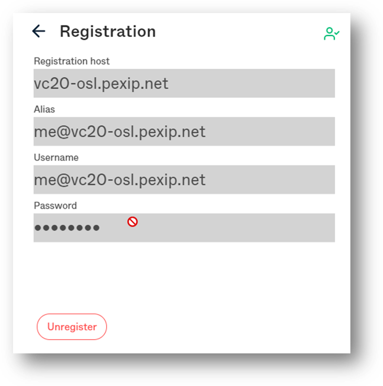
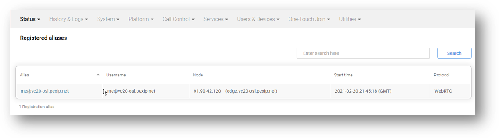

Suggested completion time: 30 minutes
Use section #4.2 of the lab sheet.
You covered the fundamentals of DNS in the level 1 eLearning. It's a great time to recover this topic as DNS provides the mechanism for call signalling and registration.
To register a device to Infinity:
Configure Infinity to accept the registration:
Add another device alias, user2.readonlyadmin@<Pexip Infinity domain>, and allow SIP registrations. Use the same username and default password.
Configure an external Infinity Connect desktop client (installed onto YOUR laptop) to register toward your deployment:
If you would like to register other devices to Pexip, you can use the same alias or create other aliases as you wish.
Configure an internal Infinity Connect desktop client (pre-installed onto the Jumpbox) to register toward your deployment:
NOTE: The Infinity Connect desktop client does not work perfectly in the lab environment as the virtual camera is not recognised. You can still register the client and receive video, but you cannot send a video stream.
Configure an internal Poly RealPresence Desktop (RPD) client (pre-installed onto the Jumpbox) to register toward your deployment using SIP TLS:
NOTE: Your remote session to the Jumpbox needs to be a high enough resolution for RPD to work correctly. Sometimes, your local computer settings can cause the remote desktop session resolution to be reduced; for example, setting the font size high on your local machine can cause the remote desktop session resolution to be forced low.
Before you test, ensure you have waited 1 minute for the configuration changes to synchronise across all the nodes.
Once a device is registered, it can dial into your configured Infinity services. Registered devices can use both short and full URI aliases to connect to the services. In addition, the Pexip Infinity Connect desktop client will show phonebook entries as you type an alias to dial.
For the moment, you will be unable to place point-to-point calls between registered devices. Due to the distributed design of Infinity, there is no concept of a "local zone", unlike that of other video infrastructure (such as a Cisco VCS or Expressway). Therefore, point-to-point calls placed through Infinity require Routing Rules that create Gateway service instances. We will look at Routing Rules and Gateways in the next lab.
Ensure you can place a call into your configured services from the registered devices using the short alias, e.g. vmr.
We have also outlined some addition detial in the More Info button at the top of the page
Ensure your system and clients looks similar to the screenshots below showing the registered devices and status in Infinity.

